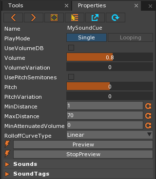
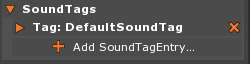
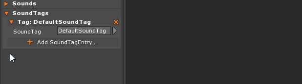
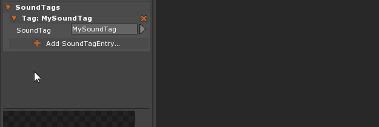

SoundTag
SoundTags are a resource that allow the user to group together SoundCues and modify those SoundCues as a group. SoundTags are added to SoundCues by adding a SoundTagEntry sub-object, which takes a SoundTag resource as a parameter. A SoundCue can have have multiple SoundTags applied to it through SoundTagEntries, belonging to many groups at once. The ways in which SoundCues grouped by SoundTags can be modified are the same as any individual SoundCue (Interpolate Volume and Pitch, Pause and Continue, etc...).
Common Uses
- Grouping SoundCues by type (e.g Sound Effects, Character Voices, Music Cues)
- Grouping SoundCues for randomization (e.g randomizing explosion sounds, character responses, player feedback sounds)
- Grouping SoundCues by compression type (e.g. .wav files, .ogg files, streaming files)
- Grouping SoundInstances (i.e. instances of SoundCues) for modification at runtime instead of modifying multiple SoundCue Resources (Highly Recommended)
Using SoundTags
This section will cover creating SoundTags, how to apply them to SoundCues, and how to modify SoundCues based on SoundTag groups.
Creating a SoundTag Resource and SoundTagEntry Object
In order to use SoundTags, they must be applied to a SoundCue that is in use. This will allow all SoundCues that share any particular SoundTag to be modified at the same time.
Once a SoundTag has been created, the resource can be opened from the Library window to be modified.

By clicking on the orange arrow next to the SoundTag label the SoundTag window will be opened, allowing new SoundTags to be applied or old ones removed.

All SoundCues have the DefaultSoundTag applied to them by default, but this can be changed by clicking on the orange arrow next to Tag: DefaultSoundTag to open the Tag properties view, then on the DefaultSoundTag resource to change the applied SoundTag.

To add more than one SoundTag to a SoundCue, simply click on the “Add SoundTagEntry” button found below the default SoundTag.

Modifying SoundCues Grouped by SoundTag
As stated previously, SoundCues grouped together by SoundTags can be modified at the same time through a reference to that SoundTag. This can be used to modify the pitch and volume of the sounds, pause and unpause them, or even apply or remove SoundTags from SoundInstances.
Interpolate Sound and Pitch
The following code-blocks illustrate how to interpolate the volume and pitch of currently playing sounds that are grouped under a specific SoundTag. See this warning in the SoundSpace page about changing volume or pitch in two places at once.
This code-block sets up the SoundTag variable, given the Property attribute so it can be set in the Editor, that indicates the particular group of sounds the user wishes to change:
//Create a variable with the Property attribute to set the SoundTag to use
[Property]
var MySoundTag : SoundTag;
While this code-block shows the actual interpolation of volume and pitch, called by key presses:
function OnKeyDown(event : KeyboardEvent)
{
//Define variable for interpolation time
var timeToInterpolate : Real = 2.0;
if(event.Key == Keys.V)
{
//Interpolate Volume of SoundCues grouped by SoundTag over time to value of 0.8
this.MySoundTag.InterpolateVolume(0.8, timeToInterpolate);
}
if(event.Key == Keys.P)
{
//Interpolate Pitch of SoundCues grouped by SoundTag over time to value of 0.5
this.MySoundTag.InterpolatePitch(0.5, timeToInterpolate);
}
}
For both SoundTag.InterpolateVolume and SoundTag.InterpolatePitch, the first value passed to the function is the desired value of the volume/pitch, and the second value is the amount of time it takes for the interpolation to go from the starting value to the desired value.
Pause, Continue, and Stop SoundCues
The following code-blocks illustrate how to pause, resume, and stop sounds on the SoundSpace that are grouped by a SoundTag. See this warning about the effects of pausing in multiple locations.
As before, this code-blocks sets up the SoundTag variable, given the Property attribute so that it may be set in the Editor, that indicates the particular group of sounds the user wishes to affect:
//Create a variable with the Property attribute to set the SoundTag to use
[Property]
var MySoundTag : SoundTag;
This code-block shows the functions used to pause, resume, or stop the sounds grouped by SoundTag
function OnKeyDown(event : KeyboardEvent)
{
if(event.Key == Keys.P)
{
//Pauses SoundCues grouped by SoundTag
this.MySoundTag.PauseSounds();
}
if(event.Key == Keys.C)
{
//Continues paused SoundCues grouped by SoundTag
this.MySoundTag.ContinueSounds();
}
if(event.Key == Keys.S)
{
//Stop SoundCues grouped by SoundTag
this.MySoundTag.StopSounds();
}
}
Tagging and Untagging SoundInstances
The following code-block illustrates how to tag and untag SoundInstances (created through playing SoundCues) with SoundTags. As the user is highly encouraged to make all changes to SoundInstances instead of SoundCues, this functionality allows the user to give SoundInstances the same SoundTag functionality SoundCues already have. Everything that can be done to SoundCues grouped by SoundTag can also be done to SoundInstances grouped by SoundTag.
//Create a variable with the Property attribute to set the SoundCue to use
[Property]
var MySoundCue : SoundCue;
//Create a variable with the Property attribute to set the SoundTag to use
[Property]
var MySoundTag : SoundTag;
//Create a variable for the first SoundInstance object
var MySoundInstance : SoundInstance;
function Initialize(init : CogInitializer)
{
//Playing a SoundCue while creating SoundInstance object for this particular
//instance of playing the SoundCue
this.MySoundInstance = this.Space.SoundSpace.PlayCue(this.MySoundCue);
}
function OnKeyDown(event : KeyboardEvent)
{
if(event.Key == Keys.T)
{
//Tagging a SoundInstance with a SoundTag
this.MySoundTag.TagSound(this.MySoundInstance);
}
if(event.Key == Keys.U)
{
//Untagging a SoundInstance with a SoundTag
this.MySoundTag.UnTagSound(this.MySoundInstance);
}
}
SoundCue Functionality
SoundCue also has a member function that involves SoundTags called AddSoundTagEntry that allows the user to add a SoundTag to a SoundCue at runtime. As stated in the page on SoundCues, it is best to not alter the SoundCue resource at runtime, but rather create a SoundInstance. With that said, here is a code-block demonstrating the function:
[Property]
var ApplyTag : Boolean = false;
[Property]
var SoundCueToUse : SoundCue = null;
[Property]
var SoundTagToUse : SoundTag = null;
// ...
function OnLogicUpdate(event : UpdateEvent)
{
//If the ApplySoundTag boolean variable is true...
if(this.ApplySoundTag)
{
//Add a SoundTag to the SoundCue
this.SoundCueToUse.AddSoundTagEntry(this.SoundTagToUse);
}
}